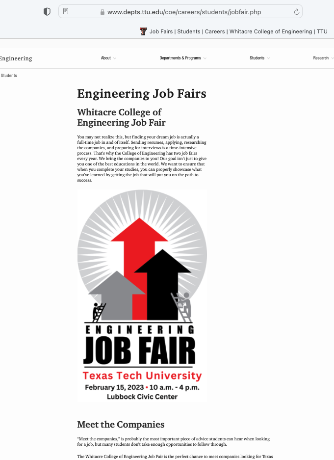
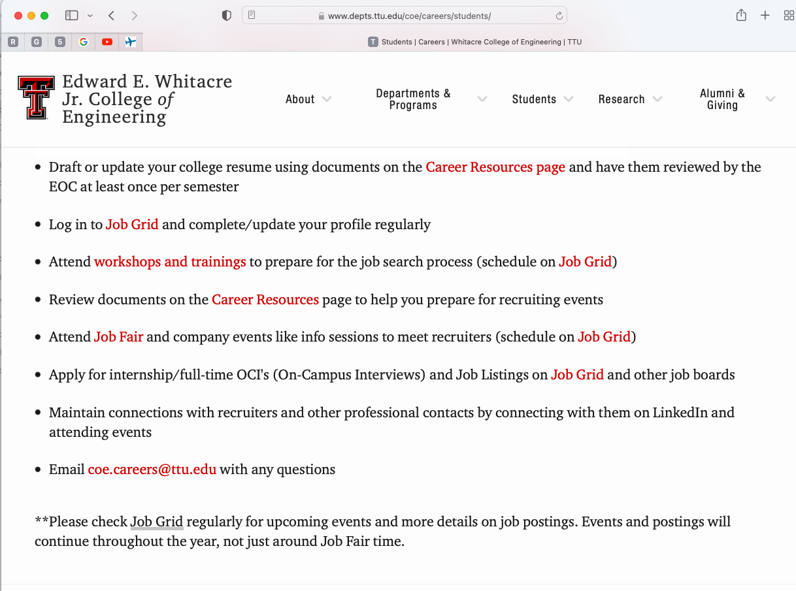

Developing A Personal Career Plan¶
Under development Use the PDF link for the in-class lesson.
INTRODUCTION¶
A question frequently asked by graduating senior students is, how do I know what job to choose? Perhaps now you are not thinking about getting a job. But imagine that in about 6 months, you find yourself with multiple job offers, as some of our students are doing. How would you answer this question? This is actually a misdirected question. More specifically:
Not a job, but a fit\(^*\)
Not what others want for you, but what you want for yourself
Not just salary, it’s about personal satisfaction
Note
\(^*\)Fit is currently (circa 2022) a trigger word in HR circles.
JOB HUNTING 101¶
You are not looking for a job. You are looking for a good match between your skills, talents, gifts, abilities, interests and needs, and a place/way to express those in the workplace. In this way, job hunting becomes transformed from a filtered search (numbers game) to a diligent, focused inquiry for information and insight both inward (yourself) and outward (potential employers).
Exercise: What are you good at? Can you think of a way to express this in the workplace?
Note
You have to eat, have shelter, and such. While usually it is better to be a king in hell than a slave in heaven; There will be times in your career when these simple requirements (food, clothing, shelter) will dominate decisions, and that’s OK - but have an exit plan.
DO YOU HAVE GOALS?¶
It has been said that the happiest time in your life are when you are pursuing a goal. Aimlessness is not fun. What are your goals? What about after graduation? Where do you prefer to live? What type of work interests you? Do you plan to save money and grow wealth? Do you think you will continue your formal education? Want to travel? Want to start a family? Spiritual. Vocational. Educational. Financial. Personal. Your assignment gets into this.
WHAT ABOUT MULTIPLE OFFERS?¶
Learn about the companies that appear interesting to you.
Start with research, and refine your inquiry with the interview and office (or site) visit.
This is not only a great way to make a clear impression that you are deeply interested in the company, but to communicate that you have things personal and unique to offer.
Identify what is important to you. What are the factors? Categories and subcategories.
Put weighting factors on these (point spread).
Carefully reflect on how you should rank each opportunity.
Sum them up.
Make your decision
WCOE Services¶
The mighty Job Fair!
JobGrid!

If you visit WCOE pages here is the guidance for the Job Grid/Job Fairy

Other Services¶
Indeed.com. I know of 2 people since 2014 that found engineering jobs and accepted them using Indeed so its not bunk.
Monster.com. A little more geared to IT and manufacturing chump jobs, but much like Indeed.
USA Jobs. All federal jobs post here - Corps of Engineers, Bureau of Reclaimation, NTSB, USGS, US EPA …. there are a fair amount of entry level engineering jobs all over the USA and globally. Many have citizenship requirement; but a large number only require right to work in USA. Its a pain in the ass to get everything uploaded, but once done it is easy to apply for new jobs as they arise - i think uploads are stored on their server for 2 years, and they email you when your data is about to pumpkin.
Note
If you are a veteran, manu jobs require documents that don’t exist for you - its an IQ test; I place documents that state: “At the time of my discharge such forms/requirements did not exist hence such a form is not applicable” then upload as a PDF with the proper form name to get by the computer screen. If a human ever sees your application they can institute a work around.
USA Jobs knows about this flaw, but they don’t have a fix yet.
References¶
ASCE BOK-2 You will need this for the homework; although BOK-3 may be sufficient.